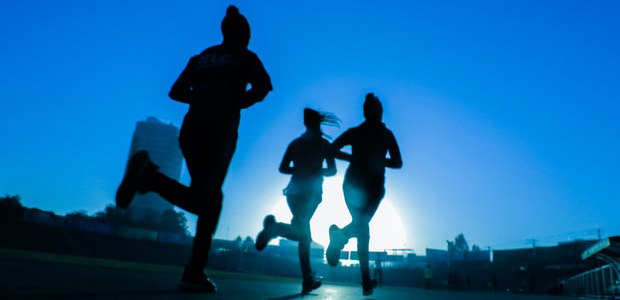

- 올림픽 공원 내에서
즐기는 다양한 종목의 스포츠센터 - 88서울올림픽대회를 성공적으로 치러낸 6개의 체육관과 경기장, 그리고 세계적인 조각공원으로 유명한 올림픽 공원 내에 자리잡고 있는 올림픽공원 스포츠센터
- 88서울올림픽대회를 성공적으로 치러낸 6개의 체육관과 경기장, 그리고 세계적인 조각공원으로 유명한 ‘올림픽공원’ 내에 자리잡고 있는 ‘올림픽공원 스포츠센터’는, 국민 생활체육의 저변 확대를 위해서 수영장, 체조 경기장, 테니스 경기장을 다양한 종목의 스포츠센터로 개발하여 지역 주민들에게 제공함으로써 삶의 질을 향상시키는 데 크게 기여하고 있는 도시 속의 낙원, 생활 체육의 요람입니다.